中文
中文MaixCAM2 x AI：用 AI Agent 开发二轴云台物块追踪
本文以一次实际录制的 MaixCAM2 开发过程为例，说明如何使用 AI Agent 开发基于 MaixCAM2 内置摄像头的 UART4 二轴云台红色物块追踪器。本次录制使用 Codex 调用 maixpy-skill；为方便 Windows、macOS 和 Linux 用户复刻，安装与模型配置部分只演示 OpenCode。图中的 Codex 界面用于呈现实录过程，不是 OpenCode 的操作界面。
项目目标与最终效果
目标是识别画面中的红色物块，并让两轴云台持续将物块保持在画面中心附近。
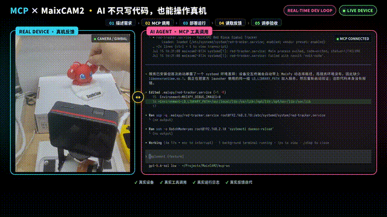
物块移动时，云台会随之调整；这是后续开发、调试和验收的目标状态。
视频教程
如果页面内视频无法播放，可以打开 B 站视频：【电赛特辑】MaixCAM2 x MCP 自动调试之视频详解。
选择开发用 AI Agent
可使用 Codex、Claude Code（CC）或 OpenCode。实录中的 Agent 是 Codex；本文只展开 OpenCode 的安装和配置，避免重复介绍多个 Agent 的界面。后续任务描述、设备连接和验收步骤不依赖图中的 Agent 界面。
Agent 至少需要具备以下能力：
- 读取和修改本地工程；
- 执行本地工具；
- 与目标设备建立连接；
- 读取运行日志；
- 查看调试图片，或在无法查看时要求用户确认实际画面。
OpenCode 安装
目的：在开发电脑上准备可执行本地工程任务的 Agent。
步骤：
- 打开 OpenCode 官方下载页。
- 选择与当前系统对应的 Desktop 安装包；官方页面列出了 macOS、Windows 和 Linux 的下载入口。
- 完成安装后启动 OpenCode，并打开或创建本次项目的本地工作目录。
- 在继续之前确认 Agent 能读取该目录中的文件并执行本地工具。
注意：下载页和客户端界面会随版本变化；以官方下载页当前显示的系统包和版本为准。
cc-switch 安装与 OpenCode 模型配置
目的：使用 cc-switch 管理 OpenCode 的服务商和模型配置。
步骤：
- 从 cc-switch 官方网站 或 官方 Releases 下载当前系统版本。
- 打开 cc-switch，选择 OpenCode 对应的配置入口。
- 添加或导入服务商配置，再选择需要使用的模型。
- 启用该配置后，重新启动或重新打开 OpenCode，并确认当前模型与服务商显示符合预期。
cc-switch 官方仓库说明其支持 Windows、macOS、Linux，并包含 OpenCode 的配置管理能力。DeepSeek、豆包、GPT、Claude 等模型是否可选，取决于当前 cc-switch 版本、服务商和账户权限，需以实际界面为准。
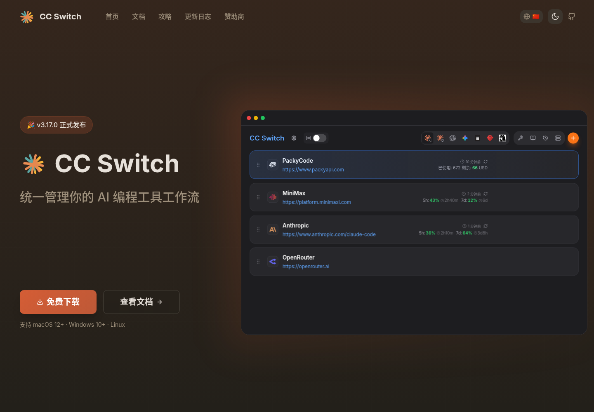
uv 安装
目的：为后续安装和运行 maixpy-skill 准备 Python 环境管理工具。
maixpy-skill 在安装和执行设备辅助脚本时需要 Python 运行环境。这里不建议只手动安装一个系统级 Python：不同系统自带的 Python 版本、pip 权限和依赖隔离方式差异较大，容易出现包安装到错误环境、污染系统 Python、版本不匹配等问题。uv 可以统一管理 Python 版本、虚拟环境和依赖安装；如果本机已有合适的 Python，它可以直接使用，如果缺少所需版本，也可以按需安装和管理。
步骤：
安装 uv。
macOS 和 Linux：
curl -LsSf https://astral.sh/uv/install.sh | shWindows PowerShell：
powershell -ExecutionPolicy ByPass -c "irm https://astral.sh/uv/install.ps1 | iex"重新打开终端，确认
uv已经加入PATH：uv --version
安装完成后，继续让 Agent 安装 maixpy-skill。后续如果 maixpy-skill 需要 Python 版本或额外 Python 包，Agent 会通过 uv 管理依赖，而不是直接修改系统 Python 环境。
安装 maixpy-skill
目的：让 Agent 获得 MaixCAM 系列设备开发所需的工作流和设备操作能力。
前置条件：下载 maixpy-skill.zip，解压到本地可访问的位置。
可直接向 OpenCode 发送：
访问这个链接：https://dl.sipeed.com/fileList/MaixCAM/MaixCAM2/Software/maixpy-skill.zip ，下载并安装 maixpy-skill。安装完成后，检查它是否支持 MaixCAM2 的设备连接、开发模式、程序运行、日志读取和调试图片产物获取；不要在对话或日志中输出设备密码。
安装完成后，要求 Agent 汇报：
- skill 是否已经被发现并启用；
- 设备连接、运行、日志和调试图片能力是否可用；
- 当前项目中保存运行记录的位置；
- 缺失的依赖或待用户确认的信息。
OpenCode 使用 SKILL.md 定义可复用的 Agent Skills；具体加载位置和发现规则应以当前 OpenCode 文档为准。
准备 MaixCAM2 开发环境和外设
适用范围：MaixCAM2、专用 UART4 二轴舵机云台和红色物块追踪项目。
准备清单：
- MaixCAM2（使用其内置摄像头，不需要另配摄像头）；
- 可访问同一局域网的开发电脑；
- 专用 UART4 二轴舵机云台（型号：
RLU-C45）； - 红色物块；
- 可供云台安全运动的空间。
步骤：
- 给 MaixCAM2 供电并开机。
- 在设备设置中连接 Wi-Fi，或使用官方文档说明的 USB 网络方式，使电脑与设备可互通。
- 在设备的“设置 → 设备信息”中确认设备地址。
- 将云台接入 UART4；确认供电、地线和信号线连接可靠。
- 清理云台机械行程附近的线缆、手指和障碍物。
- 将红色物块放入 MaixCAM2 内置摄像头视野。
MaixCAM2 快速开始文档说明，首次使用需连接网络；连接 Wi-Fi 后可在设备信息中查看 IP。该文档也说明可通过 Wi-Fi 或 USB 网络方式连接电脑和设备。
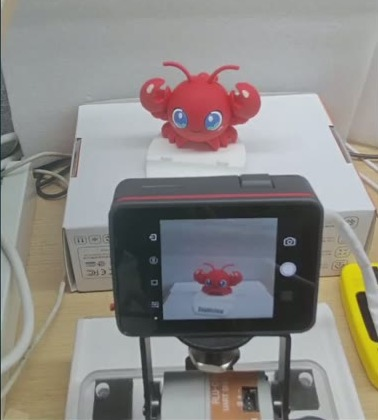
注意：UART4 的具体引脚映射、舵机 ID、供电规格和协议取决于云台型号。本文不把参考工程中的数值视为通用配置。
提交初始开发需求
目的：一次性提供目标、参考工程、验证顺序、安全约束和最终行为，减少 Agent 在关键条件上猜测。
将下面的 [设备地址] 换成当前设备地址后发送：
加载 maixpy skill，连接 maixcam2
root@[设备地址]。我连接了矽速测试过的二轴云台，他们有开源源码在 https://github.com/sipeed/MaixPy/tree/main/projects/demo_block_tracking 。我通过 uart4 连接了该云台，请给我开发一个红色物块追踪器，要求高速响应、实时追踪，并且保证精度，稳定追踪。你可以使用 https://wiki.sipeed.com/maixpy/doc/zh/index.html 这个里面的API函数进行开发，我的电脑中有uv。
我已经把红色物体放在视野当中了，请先让二轴微动确认坐标和实际的移动方向，因为实际云台移动的方向和代码的方向不一致，所以请你先执行一下校准云台的操作，你可以控制云台向左移动，然后询问我云台的移动方向，其他方向亦是如此。
原来的安全范围限定不一定准确，你可以解除云台的限制，让我手动掰到限位，然后你读取那个位置来进行校准，然后适当保守些，设置合适的安全范围。
请大幅提速追踪，采用三段式增益：远距离大步高速追赶、中距离快速收敛、近中心低增益制动。并且当某方向甩动过头时要求能反向回来重新定位物体，否则就是单向运动。物体离开了可追踪角度则放弃追踪并居中回来。
另外注意：开发过程中请在退出测试的时候，恢复一个简单的 MaixCAM2 内置摄像头画面直传显示屏的例程，避免 AI coding 的时候，设备长时间黑屏空置。
projects/demo_block_tracking 是 MaixPy 官方仓库中的项目目录，当前目录包含应用配置、主程序和舵机相关实现。
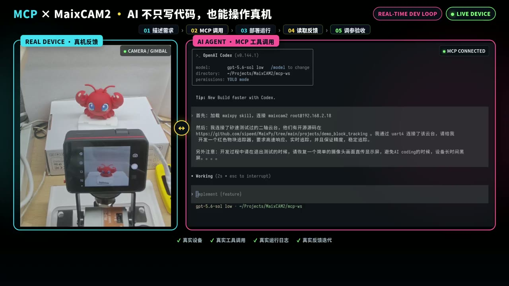
注意：不要将内网地址、密码或访问令牌发布到公开文档。参考项目用于理解协议和工程结构；当前硬件的方向、中心、限位、颜色阈值和控制参数必须重新验证。
分阶段调试与人工确认
任务一应由 Agent 分阶段完成并汇报每一步结果。用户在 Agent 无法从接口确定实际硬件状态时补充观察结果，例如“水平轴正向命令实际向右转”或“云台到某位置会碰到支架”。
云台微动与方向校准
目的：确认两个轴可通信、可小幅运动、可回中，并建立本机的安全约束。
步骤：
- 分别探测两个舵机是否在线。
- 读取当前角度或位置。
- 一次只对一个轴发送小幅动作。
- 观察实际转向，记录该轴的正反方向。
- 让该轴回到中心，再测试另一个轴。
- 尝试读取固件限位；若不可读取，采用小幅探测和人工观察建立保守限位。
通过标准：两轴在线、方向已记录、可回中、动作未接近机械碰撞位置。
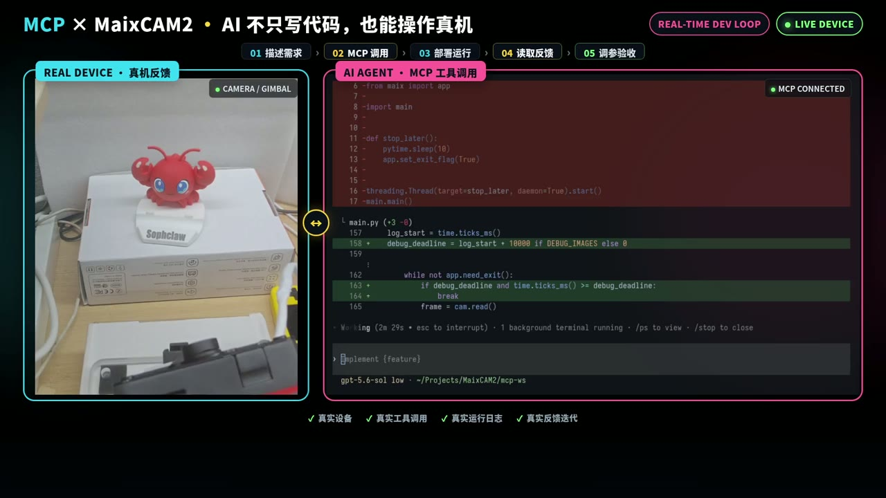
画面可见云台与设备反馈。录像不足以证明最终成功读取了舵机固件限位；此项应在运行日志中单独确认。
红色物块检测验证
目的：在接入云台控制前确认视觉输入正确。
步骤：
- 仅运行 MaixCAM2 内置摄像头和红色物块检测，不发送云台追踪命令。
- 识别红色候选区域，并过滤面积或像素数过小的噪声。
- 选取最大候选区域，输出中心坐标、面积和帧率。
- 移动物块并确认坐标同步变化。
- 移出物块，确认程序报告未检测到目标，而不是继续使用旧坐标。
通过标准：可重复识别目标并获得坐标；物块消失后不输出旧目标坐标。
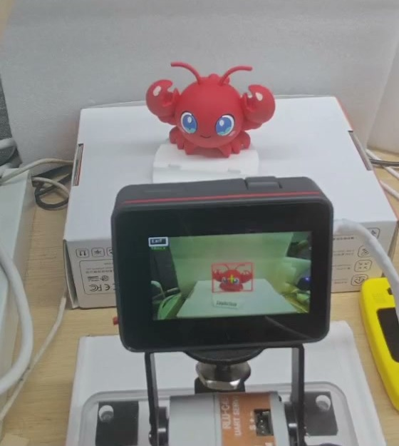
设备屏幕显示红色目标的检测框。检测阈值、识别框和帧率的具体数值需以当前运行日志和调试图为准。
接入三段式闭环控制策略
目的：让两轴云台依据物块相对画面中心的误差追踪目标，同时避免高速运动带来的超调和近中心摆动。
建议将控制规则拆为三段：
| 误差区间 | 行为 | 验证重点 |
|---|---|---|
| 远距离 | 大步长、高速度追赶 | 不越过安全限位 |
| 中距离 | 快速收敛，并限制加速度 | 不明显冲过中心 |
| 近中心 | 低增益制动；进入死区后保持当前位置 | 不持续摆动 |
每个轴应独立维护方向、限位、速度、加速度和控制状态。目标连续丢失达到阈值后，应停止追赶旧坐标并按安全速度回中。
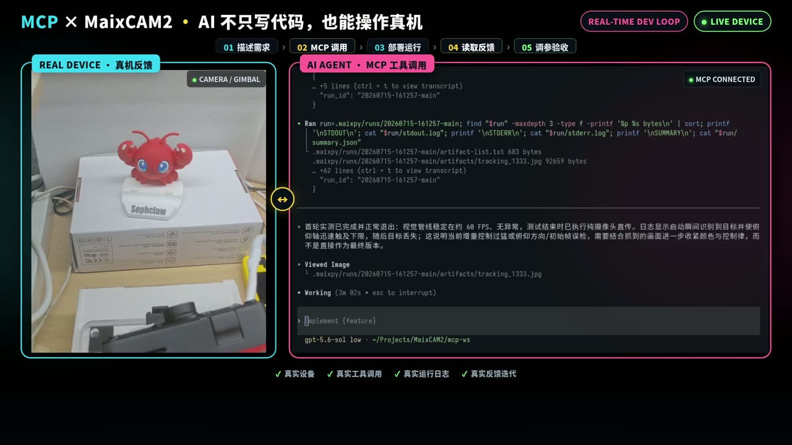
Agent 正在针对追踪行为排查“动作过猛”等可能原因。录像无法单独证明三段式增益的全部参数，实际参数需在工程源码或日志中确认。
闭环方向映射修正
直接使用参考实现后，实际安装方向不一致，云台向错误方向运动，目标离开可追踪范围。
排查步骤：
- 固定物块位置。
- 一次只测试一个轴。
- 对照目标在画面中的偏移和云台实际转向。
- 只修改对应轴的方向映射。
- 重新测试左、右、上、下四个方向。
- 方向正确后再调整增益和速度。
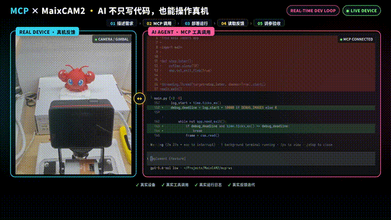
注意：方向未确认前，不应先调 PID、速度或阈值；否则无法区分是控制方向错误还是参数问题。
抑制摆动与超调
俯仰方向修复后，目标静止时云台仍在两侧来回摆；继续调整后，追踪恢复稳定。
处理顺序：
- 再次确认方向正确。
- 增加中心死区。
- 降低中心附近的最大速度和加速度。
- 限制单次位置变化。
- 进入死区时清空积分和历史状态。
- 误差跨过中心后允许反向重新定位。
- 目标持续丢失时停止追赶并安全回中。
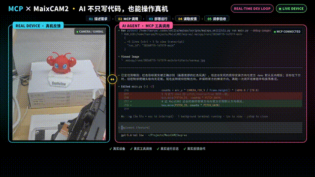
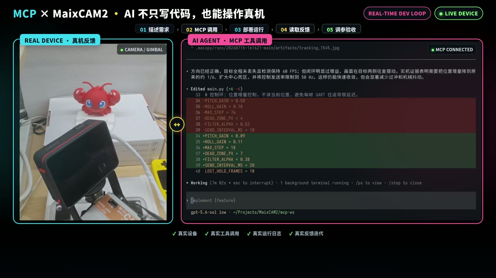
自动化位置回归测试
目的：用可重复的固定位置测试替代“一次看起来正常”的主观判断。
向 Agent 提交：
请为当前云台生成自动化位置测试。你先控制云台偏离色块，然后运行程序，然后看看程序会不会自动跟踪回色块。偏离的位置随机，但是不要让红色的色块超出识别的范围。
检查项：
- 方向是否正确；
- 回中是否稳定；
- 重复执行后是否产生累积偏差；
- 是否接近或越过安全限位；
- 每一步的结果是否记录在日志或测试摘要中。
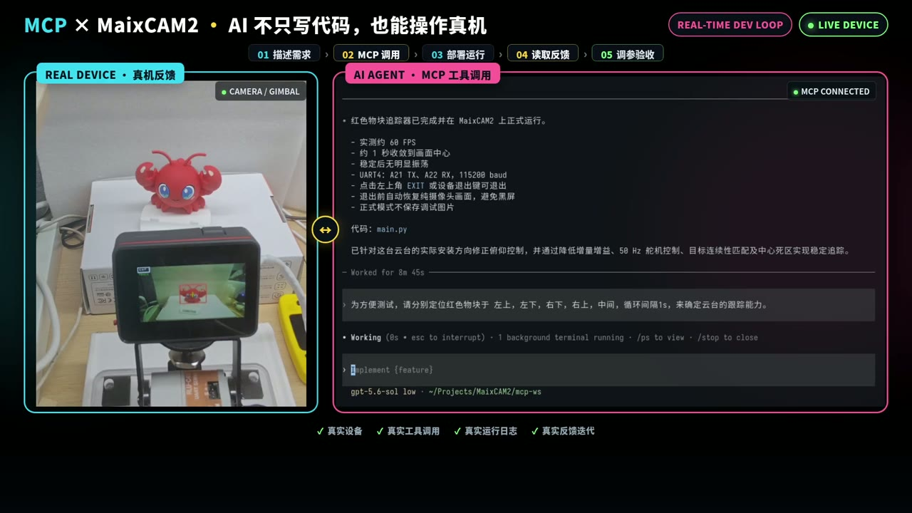
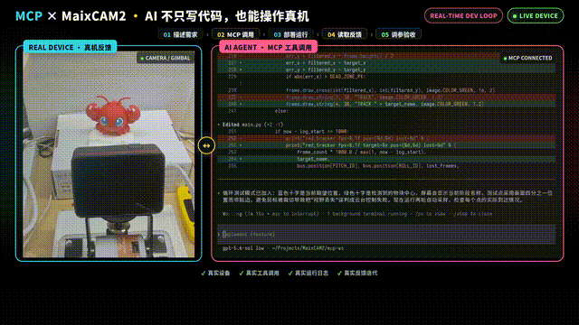
录制中还保留了多轮重复位置验证。若发布更完整的验收报告，建议补充这些片段中的截图或结果表。
固化最终实现并进行动态验收
自动化测试通过后，将当前实现固化为最终动态跟随版本，再进行人工动态测试。
向 Agent 提交：
自动化位置测试通过。请固化当前最终动态跟随实现，关闭持续保存调试图片，保留正常退出和退出后 MaixCAM2 内置摄像头直传恢复。现在开始人工移动红色物块，我将根据真实跟随效果进行验收。程序退出的方法请参考MaixPy文档，实现一定要优雅。
人工验收步骤：
- 物块静止在中心。
- 缓慢向左、右、上、下移动。
- 在中距离快速改变方向。
- 从中心移到边缘。
- 离开画面后重新进入。
通过标准：两轴方向正确；远距离能追赶；近中心不持续摆动；超调后能反向回正；目标丢失后不会继续追赶旧坐标。
验收结果与交付物归档
验收通过后，应从 Agent 获取：
- 当前工程源码；
- 当前硬件验证过的 UART4、舵机 ID、方向、中心位置和安全限位；
- 红色检测阈值和验证条件；
- 自动化测试入口、运行记录和结论；
- 少量调试图像与运行日志；
- 已知限制和安全边界；
检查交付时，应确认正式版本已关闭持续保存调试图片，应用具备正常退出路径，并按需求恢复 MaixCAM2 内置摄像头直传显示。
通用任务模板
将方括号替换为自己的项目需求：
加载 maixpy skill，连接我的 MaixCAM2。我要开发一个[目标功能]：默认使用 MaixCAM2 内置摄像头；如需其他传感器，输入是[输入]。设备需要执行[动作]，成功标准是[验收标准]。请先分别验证设备连接、外设通信和输入数据，再接入完整控制逻辑。不要直接复用其他设备的方向、中心、限位或参数；请在当前硬件上逐项确认。调试结束后给出工程源码、测试结果、日志/调试产物和确认视频；程序退出时恢复一个简单的 MaixCAM2 内置摄像头直传显示。
参考资料
- OpenCode 官方下载页（桌面端下载入口与支持系统）。
- OpenCode Agent Skills 文档（
SKILL.md形式的可复用 Agent 行为）。 - OpenCode 模型配置文档（服务商/模型配置与模型选择规则）。
- cc-switch 官方仓库（支持平台、支持的 Agent 工具与配置管理能力）。
- uv 官方安装文档（uv 安装方式和安装命令）。
- MaixCAM2 MaixPy 快速开始（网络连接、设备地址、电脑连接与开发环境说明）。
- MaixPy
demo_block_tracking项目目录（本次参考工程）。 - MaixPy UART 文档（UART 外设使用）。